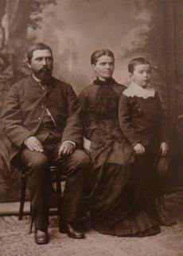
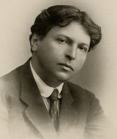
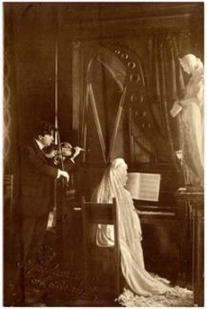

Date biografice
Considerat a fi un copil-minune, micul Jurjac (aşa cum îi spuneau
familia şi cei apropiaţi), visa să devină compozitor încă de la vârsta
de 5 ani: „Lucru curios: nu ştiam nimic, nu ascultasem nimic sau prea
puţin, nu am avut pe lângă mine vreo persoană să mă influenţeze şi,
totuşi, de copil, am avut această idee fixă de a fi compozitor. De a fi
numai compozitor”, îi declara mai târziu George Enescu lui Bernard
Gavoty, critic muzical şi jurnalist de radio.
La vârsta de 3 ani a avut una dintre experienţele muzicale hotărâtoare, când a auzit întâmplător, pentru prima oară, un taraf cântând într-o staţiune balneară situată în apropierea satului natal. Impresionat de ceea ce auzise, copilul a încercat a doua zi să imite instrumentele tarafului: vioara printr-un „fir de aţă de cusut pe o bucată de lemn” (Amintirile lui G. Enescu, de B. Gavoty), ţambalul cu ajutorul unor beţe de lemn, iar naiul, suflând printre buze.

Primele noţiuni muzicale le primeşte de la tatăl său, la vârsta de 4
ani. Văzând preocuparea pentru arta sunetelor, părinţii îi dăruiesc
viitorului muzician o mică vioară cu trei coarde. Supărat că nu este
luat în serios şi că nu a primit o vioară adevărată, copilul aruncă
jucăria în foc. Abia după ce primeşte vioara mult visată, începe să
cânte după ureche, pe o singură coardă, cu un singur deget, melodii
auzite în sat.

În 1886, Eduard Caudella, compozitor şi profesor la Conservatorul din Iaşi, remarcă talentul deosebit al lui George Enescu şi îi sfătuieşte pe părinţii acestuia să-şi îndrepte copilul către studii muzicale. Dovezi ale primelor încercări de compoziţie datează din anul următor, 1887, când Enescu (născut la 19 august 1881, în comuna Liveni-Vârnav – actualmente George Enescu, din jud. Dorohoi) avea numai şase ani.
În 1886, Eduard Caudella, compozitor şi profesor la Conservatorul din Iaşi, remarcă talentul deosebit al lui George Enescu şi îi sfătuieşte pe părinţii acestuia să-şi îndrepte copilul către studii muzicale. Dovezi ale primelor încercări de compoziţie datează din anul următor, 1887, când Enescu (născut la 19 august 1881, în comuna Liveni-Vârnav – actualmente George Enescu, din jud. Dorohoi) avea numai şase ani.
"De îndată ce am avut la dispoziţie un pian, am început să compun.
(...) Am schimbat cu o adâncă bucurie instrumentul monodic pe care
cântasem până atunci, cu un instrument polifonic; după ce nu putusem
face altceva decât să execut nişte melodii fără cel mai mic
acompaniament, ce bine era să mă desfăşor acum în acorduri! (...) Şi –
fără să mai stau pe gânduri – am început să compun."
(G. Enescu în B. Gavoty, Amintirile lui George Enescu)
(G. Enescu în B. Gavoty, Amintirile lui George Enescu)
Între 1888 şi 1894, George Enescu studiază la Conservatorul din Viena,
cu profesori renumiţi ai vremii precum Siegmund Bachrich şi Josef
Hellmesberger Junior (vioară), Ernst Ludwig (pian) şi Robert Fuchs
(armonie, contrapunct şi compoziţie).
La recomandarea lui Josef Hellmesberger Jr., profesor de vioară şi fiul
directorului Conservatorului din Viena, George Enescu este trimis de
tatăl său să studieze la Paris. Astfel, se perfecţionează la
Conservatorul din Paris (1895 – 1899) sub îndrumarea profesorilor José
White şi Martin-Pierre-Joseph Marsick la vioară, Jules Massenet şi
Gabriel Fauré la compoziţie, Ambroise Thomas şi Théodore Dubois la
armonie şi André Gédalge la contrapunct.
Din perioada studiilor la Paris datează cele patru „simfonii de şcoală”, Poema Română op. 1 (1897) pentru orchestră şi cor bărbătesc, Sonata nr. 1 pentru pian şi vioară în Re major, op. 2 (1897), Suita nr. 1, în sol minor, în stil vechi pentru pian, op. 3 (1897), Sonata nr. 2 pentru pian şi vioară în fa minor, op. 6 (1899), lucrări care i-au adus recunoaşterea tânărului compozitor George Enescu.
Deşi ceea ce îşi dorea cel mai mult era să compună muzică şi nu să
devină un virtuoz al viorii, studiul, perseverenţa şi participarea la
concursurile de vioară organizate la Conservatorul din Paris i-au adus
lui Enescu premiul al II-lea în 1898 şi, un an mai târziu, premiul I –
cu care a absolvit, la 24 iulie 1899, clasa de vioară la Conservatorul
din Paris; cu această ocazie, i s-a dăruit o preţioasă vioară Bernardel,
inscripţionată cu numele său.
"De altfel, încă de atunci, nu mă prea mai gândeam la vioară. Eram beat de muzică şi nu de performanţe la instrument. Nu visam decât să compun, să compun şi iar să compun. (...) Evocând timpurile acelea fericite, zâmbesc şi eu. Cert, pentru a-mi deprinde pana şi a-mi exersa spiritul, scriam mult – este adevărat – dar pot să afirm că totul venea, totuşi, din inimă!"
(G. Enescu în B. Gavoty, Amintirile lui George Enescu)
În calitate de interpret a înfiinţat şi condus, la Paris, două formaţii
de muzică instrumentală: un trio cu pian (1902) şi un cvartet de coarde
(1904). A concertat în Germania, Ungaria, Spania, Portugalia, Marea
Britanie şi SUA.

Cele mai cunoscute compoziţii ale lui George Enescu datează din primii ani ai începutului de secol XX. Printre acestea se numără cele două Rapsodii Române (1901-1902), Suita nr. 1 pentru orchestră în Do major, op. 9 (compusă în 1903 şi interpretată în 1911 de Orchestra Filarmonicii din New York, sub bagheta renumitului compozitor şi dirijor Gustav Mahler) sau Simfonia nr. 1 în Mi bemol major, op. 13 (1905).
Cele mai cunoscute compoziţii ale lui George Enescu datează din primii ani ai începutului de secol XX. Printre acestea se numără cele două Rapsodii Române (1901-1902), Suita nr. 1 pentru orchestră în Do major, op. 9 (compusă în 1903 şi interpretată în 1911 de Orchestra Filarmonicii din New York, sub bagheta renumitului compozitor şi dirijor Gustav Mahler) sau Simfonia nr. 1 în Mi bemol major, op. 13 (1905).
În anii primului război mondial, în paralel cu activitatea de creaţie,
Enescu a susţinut concerte în România pentru răniţii din spitale. După
război a reluat turneele în calitate de violonist şi dirijor în Elveţia,
Franţa, Olanda, Spania, SUA, Portugalia, Canada etc.
Muzicianul a dirijat Orchestra Simfonică George Enescu din Iaşi (al cărei fondator este, în perioada 1918-1920), dar şi orchestrele Societăţii Filarmonica Română (1898 – 1906), Ministerului Instrucţiunii Publice (1906 – 1920) şi Filarmonicii din Bucureşti (1920 – 1946).
Deseori Enescu era invitat la Castelul Peleş din Sinaia de către regina
Elisabeta a României (al cărei pseudonim literar era Carmen Sylva),
pentru a susţine concerte şi recitaluri de vioară. O serie de lieduri în
limba germană reprezintă rezultatul colaborării pe plan artistic dintre
compozitorul Enescu şi regina-scriitoare.
Cea mai îndrăgită lucrare a compozitorului, la care a lucrat mai bine de
zece ani, este opera Oedip, op. 23. Terminată în 1931, aceasta i-a fost
dedicată Mariei Rosetti-Cantacuzino, cea care va deveni, în 1937, soţia
lui George Enescu.

În perioada lucrului la opera sa Oedip, George Enescu a terminat o serie de lucrări simfonice şi camerale, reprezentative pentru stilul de maturitate al compozitorului: Simfonia nr. 2 în La major, op. 17 (1914), Suita pentru orchestră nr. 2 în Do major, op. 20 (1915), Simfonia nr. 3 î Do major, op. 21 (1918 – 1921), precum şi Cvartetul de coarde îm Mi bemol major, op. 22, nr. 1 (1920), Sonata pentru pian în fa diez minor, op. 24, nr. 1 (1924), Sonata pentru pian şi vioară nr. 3, în la minor, în caracter popular românesc, op. 25 (1926).
În perioada lucrului la opera sa Oedip, George Enescu a terminat o serie de lucrări simfonice şi camerale, reprezentative pentru stilul de maturitate al compozitorului: Simfonia nr. 2 în La major, op. 17 (1914), Suita pentru orchestră nr. 2 în Do major, op. 20 (1915), Simfonia nr. 3 î Do major, op. 21 (1918 – 1921), precum şi Cvartetul de coarde îm Mi bemol major, op. 22, nr. 1 (1920), Sonata pentru pian în fa diez minor, op. 24, nr. 1 (1924), Sonata pentru pian şi vioară nr. 3, în la minor, în caracter popular românesc, op. 25 (1926).
Au urmat Sonata pentru pian şi violoncel în Do major, op. 26, nr. 2,
dedicată marelui violoncelist Pablo Casals, Suita sătească nr. 3 în Re
major, op. 27 (1939), două simfonii neterminate (reconstituite şi
orchestrate de compozitorul Pascal Bentoiu), Cvartetul de coarde în Sol
major, op. 22 nr. 2 (1951), Simfonia de cameră pentru 12 instrumente
soliste, op. 33 (1954) şi Vox Maris, op. 31, poem simfonic pentru cor
mixt cu solo de tenor şi soprană, orchestră mare (1954).
Recunoaşterea şi renumele internaţional i-au oferit lui George Enescu
numeroase ocazii de a susţine cursuri de interpretare muzicală,
stilistică, analiză şi forme muzicale la École Normale de Musique din
Paris, École Instrumentale „Yvonne Astruc” din Paris, Accademia Musicale
Chigiana din Siena (Italia), Universitatea din Illinois (SUA), The
Mannes Music School din New York, la Brighton şi Bryanstone (Anglia)
etc. A predat cursuri de compoziţie la Universitatea Harward din
Cambridge, Massachussets (SUA) şi Conservatoire Américain din
Fontainbleau (Franţa).
Yehudi Menuhin, Christian Ferras, Ivry Gitlis, Ida Haendel sau Arthur
Grumiaux sunt doar câţiva dintre cei mai cunoscuţi violonişti care s-au
perfecţionat în arta interpretativă sub îndrumarea lui George Enescu.
Printre distincţiile ce i s-au acordat în semn de preţuire şi recunoaştere se regăsesc: titlurile de ofiţer şi cavaler al Legiunii de Onoare a Franţei (1913, 1936), Membru de onoare (1916) şi Membru activ (1933) al Academiei Române din Bucureşti, Membru corespondent la Académie des Beaux Arts din Paris (1929), Accademia Nazionale di Santa Cecilia din Roma (1931), Institut de France din Paris (1936) şi Academia de Arte şi Ştiinţe din Praga (1937).
În perioada ce a urmat celui de-al doilea război mondial, George Enescu
părăseşte definitiv România şi locuieşte la Paris, unde se stinge din
viaţă în 1955.
Memoria marelui muzician român este perpetuată prin Festivalul
Internaţional care-i poartă numele, prin diferite simpozioane
desfăşurate în România şi în străinătate şi nu în ultimul rând prin
expoziţii, concerte şi publicaţii realizate în cadrul Muzeului Naţional
„George Enescu” din Bucureşti.
Compozitorul, dirijorul, violonistul, pianistul şi profesorul George
Enescu (1881 – 1955) rămâne în istorie drept unul dintre cei mai de
seamă oameni de cultură ai secolului XX; şi-a asumat rolul de ambasador
al muzicii atât în ţară, cât şi în lume şi s-a implicat în promovarea
muzicii româneşti, contribuind la recunoaşterea internaţională a
compozitorilor, dirijorilor şi interpreţilor din România.

"Romantic şi clasic prin instinct, m-am străduit să împreunez în
toate lucrările mele o formă de echilibru care îşi are linia ei
lăuntrică bine definită."
(G. Enescu în Ziarul Dimineaţa, 1936)
(G. Enescu în Ziarul Dimineaţa, 1936)